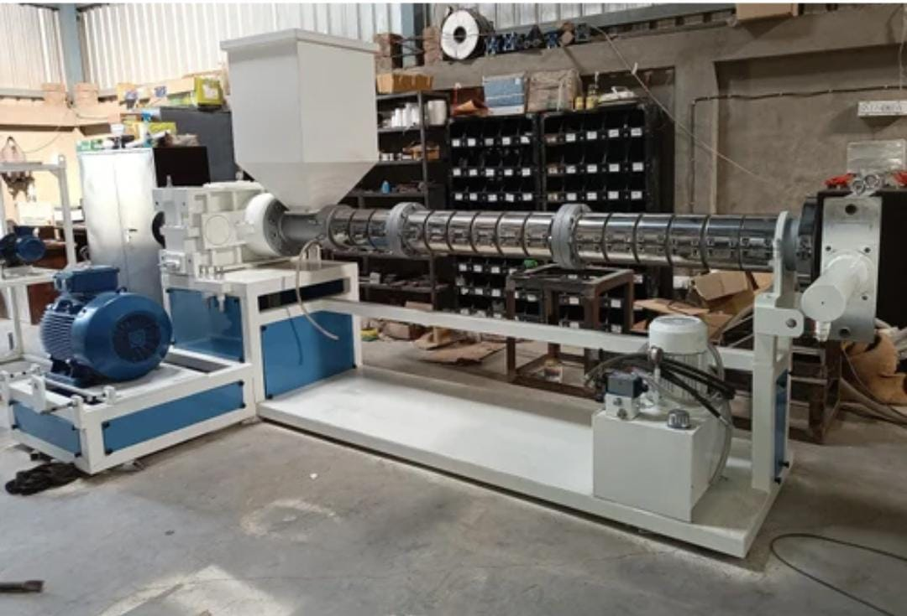
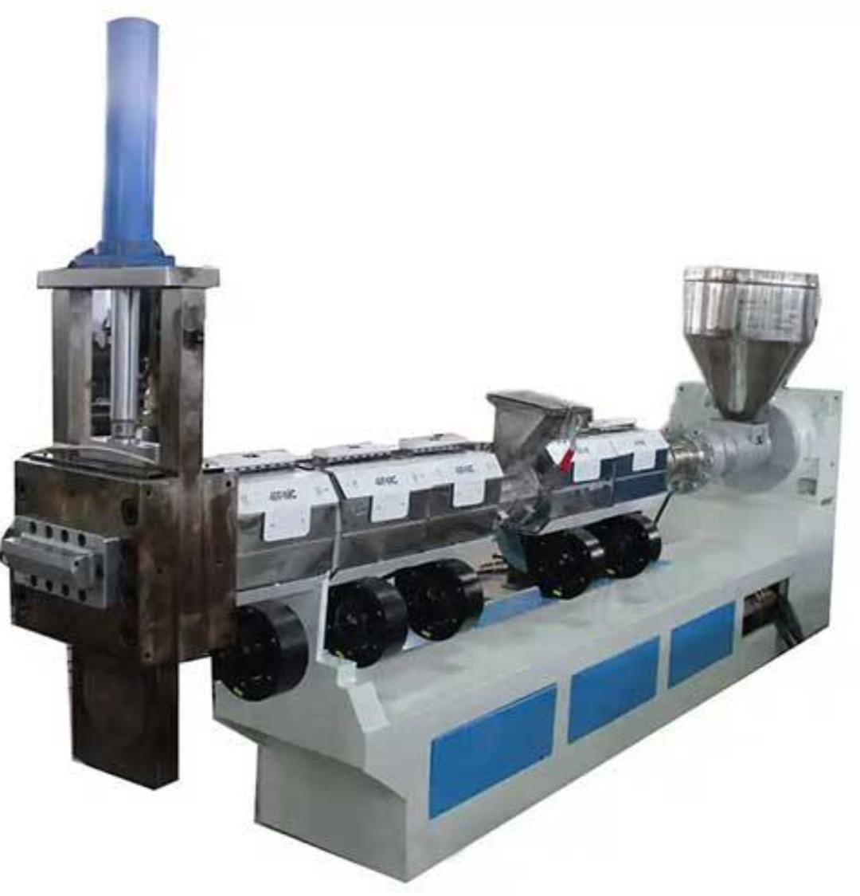
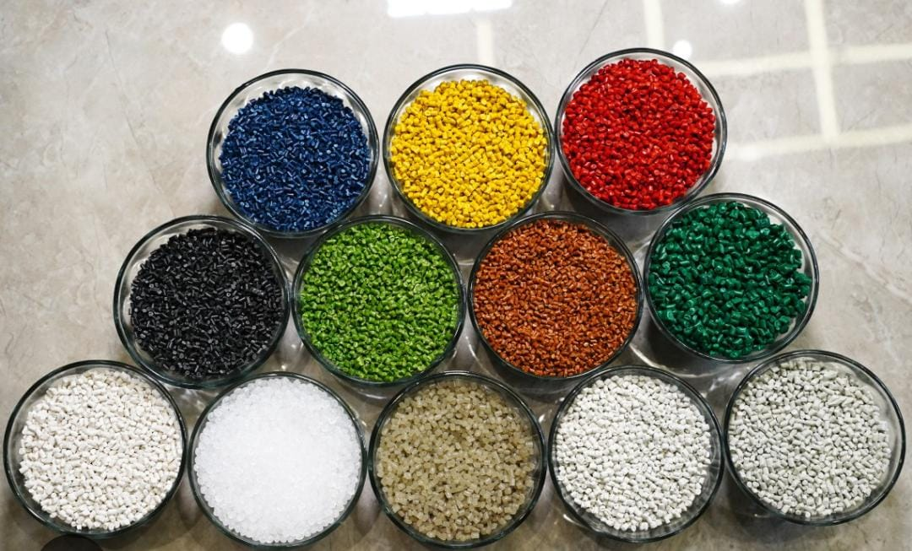

Reliable Operations
Structured sourcing, material handling, production coordination and dispatch planning.
Recycling plastics. Creating value.
Sri Sai Polymers transforms plastic waste into useful recycled materials for manufacturers, traders, recyclers and industrial partners.
We support the circular plastics economy through sourcing, sorting, processing and supply of recycled polymer material.
About Sri Sai Polymers
Sri Sai Polymers is a plastic recycling business focused on recovering and processing materials such as HDPE and LDPE for reuse in industrial applications.
We work with suppliers, transport partners, recyclers, manufacturers and buyers to move materials efficiently through the recycling chain.
Talk to our team →

Structured sourcing, material handling, production coordination and dispatch planning.
We focus on material consistency through sorting, processing and operational discipline.
We aim to build dependable relationships with customers, suppliers and logistics partners.
Our Operations
A look at our processing setup and recycled polymer output.
Extrusion and processing equipment used in polymer reprocessing operations.

Recycled polymer granules prepared for suitable industrial applications.
Industrial machinery supporting material reprocessing and production.
Products
Product specifications can be discussed according to availability, application, colour and customer requirements.
Reprocessed high-density polyethylene suitable for selected industrial applications.
Recycled low-density polyethylene for flexible and general industrial applications.
Bulk recycled-material supply and sourcing support according to commercial requirements.
Why Choose Us
We focus on dependable operations, clear communication and long-term B2B relationships.
Focused on recovering and reprocessing plastic materials such as HDPE and LDPE.
We work with manufacturers, traders, recyclers and suppliers.
Material movement and dispatch are coordinated according to business requirements.
Customers can contact us to discuss quantities, specifications and availability.
We welcome discussions with suppliers and recycling partners.
Our recycling activity helps keep usable plastic material within the economy.
Industries We Serve
We welcome enquiries from companies requiring recycled plastic materials or recycling support.
Businesses manufacturing plastic products and industrial components.
Companies involved in suitable packaging-related plastic applications.
Material traders looking for recycled polymer sourcing opportunities.
Recycling businesses and suppliers interested in material partnerships.
Industrial customers requiring recycled plastic material.
Suppliers interested in discussing suitable plastic scrap material.
Recycling Process
Our process is designed around material recovery, preparation, reprocessing and delivery.
Plastic material is sourced from suitable suppliers and industrial channels.
Material is separated according to polymer type and condition.
Selected plastic material is prepared for further processing.
Material is mechanically processed into a reusable form.
Processed material is checked before packing and dispatch.
Finished material is prepared for delivery to customers.
Sustainability
Recycling can help reduce waste, recover value from discarded material and decrease reliance on virgin polymer in suitable applications.
Our aim is to create useful material from plastic waste while supporting resource efficiency across the supply chain.
Partner With UsFrequently Asked Questions
For specific product or commercial requirements, contact us directly.
Our current focus includes plastic recycling activities involving materials such as HDPE and LDPE.
Yes. You can contact us with your required material, quantity and application so availability can be discussed.
Yes. Businesses can contact us regarding bulk recycled-material requirements.
Yes. Suppliers can contact us through the website form or WhatsApp to discuss material.
Sri Sai Polymers operates in Hyderabad, Telangana, India.
Use the website enquiry form or WhatsApp button and provide your material requirement and quantity.
Business Enquiries
Contact
For product enquiries, bulk supply, sourcing partnerships or recycling opportunities, send us a message.